Demo · Global Hydrology Dataset
Global Basin Water-Balance Atlas
A basin-by-basin picture of the terrestrial water cycle. I aggregated two-plus decades of daily satellite and land-surface model data onto the HydroBASINS watershed polygons — every basin gets a daily time series of five water-balance variables, plus a static channel stream gradient derived from a digital elevation model and the global river network. The maps below show the hydrological-year climatology (water year Oct 1 – Sep 30): fluxes summed to an annual total and then averaged across years, state variables averaged directly.
Water input
Precipitation
Mean annual precipitation traces the great wet belts — the tropics, monsoon Asia, and the maritime mid-latitudes — against the deserts of the subtropics and continental interiors. This is the primary forcing of every other variable on this page.
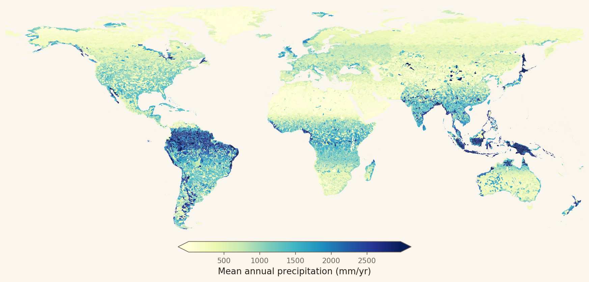
Interactive · level-7 basins · hover a basin for its value · scroll to zoom
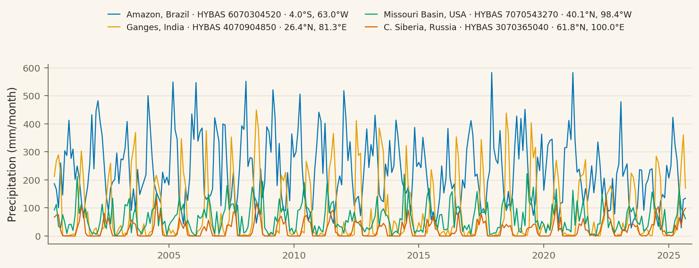
Source: NASA GPM IMERG Final daily precipitation (0.1°) — Version 06 (2000–2020) spliced with Version 07 (2021–2025). Basin means are area-weighted over the 0.1° grid. Huffman et al., GPM IMERG, NASA GES DISC.
Energy
Surface temperature
Average surface skin temperature, the energy signal behind evaporative demand. The diverging scale is centered on 0 °C, separating basins that spend the year above freezing from the cold high-latitude and high-altitude watersheds.
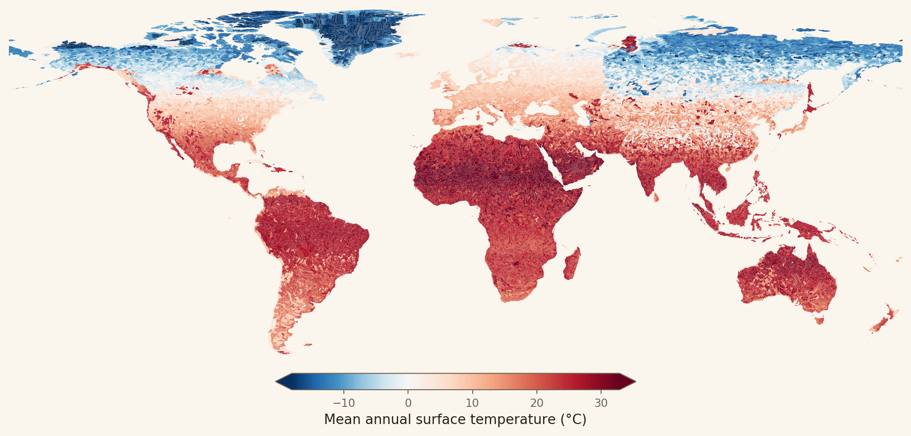
Interactive · level-7 basins · hover a basin for its value · scroll to zoom
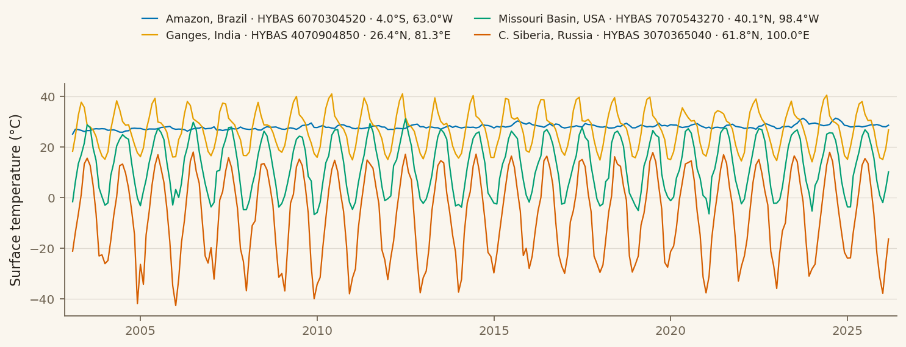
Source: NASA GLDAS-2.2 Catchment Land Surface Model (CLSM),
daily 0.25° (AvgSurfT_tavg), converted from kelvin to °C and area-weighted to
each basin. Rodell et al., GLDAS, NASA GES DISC.
Water output
Evapotranspiration
The water returned to the atmosphere by evaporation and plant transpiration. ET is high where both water and energy are abundant (humid tropics) and suppressed by either cold (poleward basins) or dryness (deserts, where it is limited by supply rather than demand).
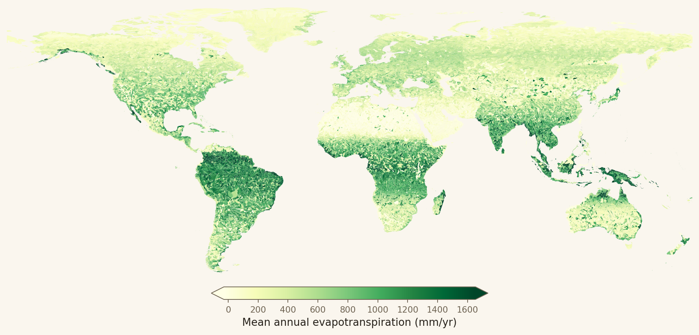
Interactive · level-7 basins · hover a basin for its value · scroll to zoom
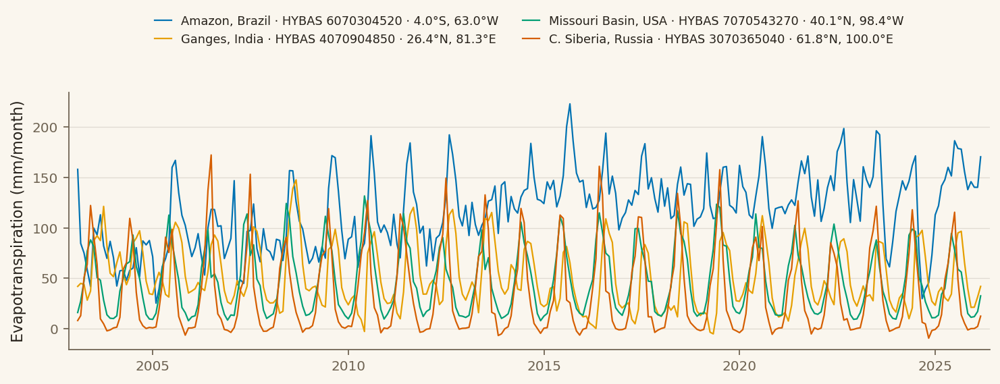
Source: GLDAS-2.2 CLSM Evap_tavg [kg m⁻² s⁻¹], converted to
mm/day (×86 400) then summed to an annual total. Physically impossible cell values
(< −1 mm/day condensation) were screened as artifacts before aggregation.
Water output
Runoff
Total runoff — surface storm runoff plus subsurface baseflow — is the water that leaves the basin as streamflow. It concentrates in wet, steep, and snowmelt-fed regions and effectively vanishes across arid interiors.
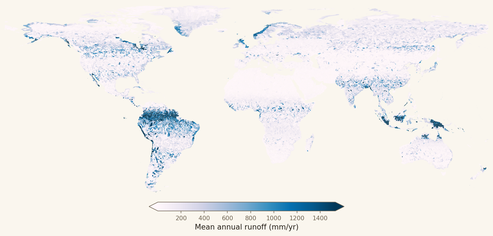
Interactive · level-7 basins · hover a basin for its value · scroll to zoom
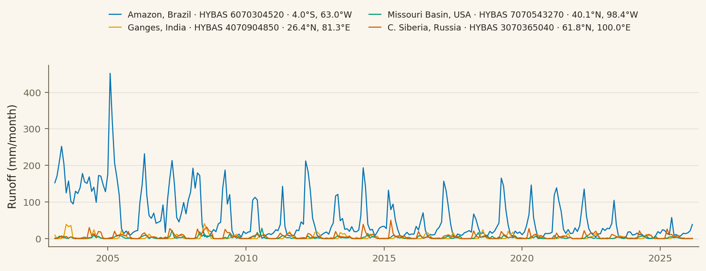
Source: GLDAS-2.2 CLSM Qs_tavg (storm surface runoff) +
Qsb_tavg (baseflow), each [kg m⁻² s⁻¹] → mm/day → annual sum, area-weighted per basin.
Storage
Groundwater storage
The modeled groundwater held in each basin — a state variable, so it is averaged rather than summed. It reflects the long-term balance of recharge and drainage and the water-holding capacity of the landscape.
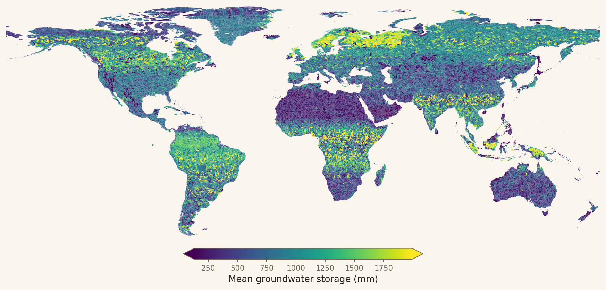
Interactive · level-7 basins · hover a basin for its value · scroll to zoom
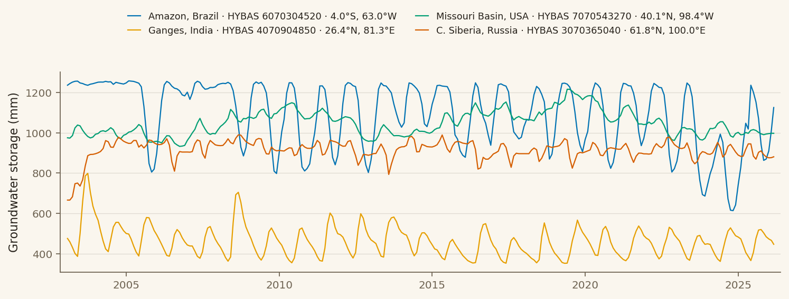
Source: GLDAS-2.2 CLSM GWS_tavg [mm], area-weighted basin mean.
Terrain (static)
Stream gradient
A morphometric descriptor rather than a climate variable: the basin relief (highest minus lowest elevation) divided by the length of its main stem, expressed dimensionlessly as m/m. Because it spans several orders of magnitude, it is shown on a logarithmic scale — high in mountainous headwaters (yellow) and low across floodplains and cratonic lowlands (dark), which helps explain why some basins are flashy while others are slow.
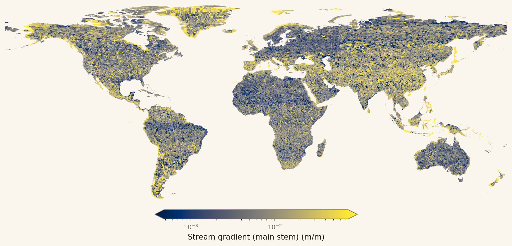
Interactive · level-7 basins · log color scale · hover a basin for its value · scroll to zoom
Stream gradient is a static basin property — no time series.
Source: HydroSHEDS void-filled DEM (3 arc-sec ≈ 90 m where available, else 15 arc-sec ≈ 500 m) for basin relief, and HydroRIVERS v1.0 for the main stem — traced from the outlet upstream, following the maximum upstream-drainage-area reach at each confluence. Lehner & Grill (2013), HydroSHEDS.
Methods & data provenance
- Basins: HydroBASINS (Pfafstetter) levels 7 (57,646) and 6 (16,397), global.
- Zonal statistics: exact fractional cell–basin overlap-area weights, computed once per grid; each daily field is an area-weighted basin average. Fluxes use Σ(value·cell area) ⁄ basin area.
- Hydrological year: Oct 1 – Sep 30. Fluxes (P, ET, runoff) summed to an annual total then averaged over water years; states (temperature, groundwater) averaged. A water year counts for a basin only when ≥ 350 valid days are present.
- Temporal coverage: precipitation 2000–2025 (IMERG); GLDAS variables 2003–2026.
- Quality control: negative ET below −1 mm/day (non-physical) and other out-of-range source cells are screened before aggregation; a raw, unscreened copy is retained.
- Data products: NASA GES DISC (GLDAS-2.2 CLSM, GPM IMERG) and HydroSHEDS / HydroRIVERS / HydroBASINS (WWF & McGill University).